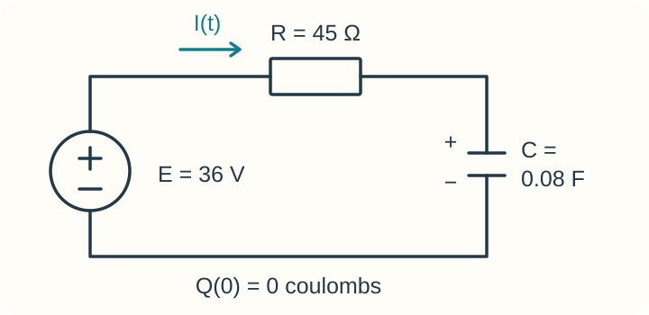

Course practice / Batch 19 / 2026-10-13 PDT
MTH 256
一阶微分方程：Week 2 作业同型训练
Week 2 homework patterns: linear equations and models · Wk 2-2 与 Wk 2-3 作业同型：线性方程通解、积分因子、初值代入、变体积混合、RC 电路、学习模型、平衡稳定性与定量捕捞
MTH 256 补齐日期：2026-10-15 PDT。本组原发布日期：2026-10-13 PDT。
General solution with exponential forcing
Find the general solution of the differential equation \[y^{\prime}-3y=t e^{-4t}.\] Use lower-case c for the arbitrary constant. Both t and y are dimensionless, with t real.
中文提示（不含解答）
先写成一阶线性标准形式；乘以积分因子后，右侧仍是一次多项式与指数函数的乘积。只需给出通解。
General solution with a sine input
Find the general solution of the differential equation \[y^{\prime}+5y=4\sin(5t).\] Use lower-case c for the arbitrary constant. Both t and y are dimensionless, with t real; angles are in radians.
中文提示（不含解答）
乘以积分因子后，可用两次分部积分处理指数函数与正弦函数的乘积。只需给出通解。
General solution with a variable coefficient
Find the general solution of the differential equation \[\frac{dy}{dt}-\frac{4}{t}y=t^6,\qquad t>0.\] Use lower-case c for the arbitrary constant. Both variables are dimensionless.
中文提示（不含解答）
积分因子取决于 y 的系数及其符号；先化简乘完积分因子后的幂次，再积分。
Integrating factor and general solution
Consider the differential equation \[\frac{dy}{dt}=-6ty+7e^{-3t^2}.\] Both t and y are dimensionless, with t real.
- Find an integrating factor \(\mu(t)\).
- Find the general solution \(y(t)\). Use lower-case c for the arbitrary constant.
中文提示（不含解答）
先把含 y 的项移到左侧，再确定积分因子。积分因子允许相差一个非零常数倍。
Solve an IVP and evaluate the solution
Solve the initial value problem \[\frac{dy}{dt}-\frac{2}{t}y=3t^2e^{3t},\qquad y(1)=0,\qquad t>0.\] Then calculate \(y(2.3)\). Enter that value rounded to the nearest integer. Both variables are dimensionless.
中文提示（不含解答）
先求出含常数的解，再用初始条件确定常数；最后代入指定时间，并在最后一步取整。
Pure-water dilution in an expanding tank
A tank initially contains 135 kg of dissolved salt in 1500 L of solution. Pure water enters at 12 L/min, and perfectly mixed solution drains at 6 L/min. The rates remain constant. Assume the tank is large enough to hold all the solution, with no evaporation or other losses.
- What is the amount of salt in the tank initially, in kg?
- Find the amount of salt in the tank after 4 hours, in kg.
- Find the concentration of salt in the tank as time approaches infinity, in kg/L.
中文提示（不含解答）
以分钟为时间单位；流入与流出速率不同，流出盐量必须使用随时间变化的体积。
Charge and current in a series RC circuit
A single series RC circuit contains an ideal constant 36 V battery, a 45 Ω resistor, and a 0.08 F capacitor. The capacitor is initially uncharged: \(Q(0)=0\) coulombs. The source polarity and positive charging-current direction give \(RI+Q/C=E\), where \(I=dQ/dt\). Use t in seconds for \(t\ge0\).
Find the charge \(Q(t)\), in coulombs, and the current \(I(t)\), in amperes.

中文提示（不含解答）
先求电荷的初值问题，再对电荷求导得到同一参考方向下的电流。
Maximum performance of two learners
Let \(P(t)\) be a worker's production speed, in units per minute, after t hours of training. The learning model is \[\frac{dP}{dt}=k(M-P),\] where M is the worker's maximum production speed and k is a positive constant in h\(^{-1}\). Each worker has their own constants M and k and starts with \(P(0)=0\).
Two new workers, Maya and Leo, join an assembly line. Maya processes 18 units per minute after one hour and 24 units per minute after two hours. Leo processes 16 units per minute after one hour and 22 units per minute after two hours. Using this model, estimate the maximum number of units per minute that each worker is capable of processing.
Maya: __________ units/min
Leo: __________ units/min
中文提示（不含解答）
对两位工人分别使用一小时与两小时的数据；两人不必有相同的学习速率常数。只需填写两人的最大生产速度。
Equilibria and their stability
Consider the differential equation \[\frac{dx}{dt}=(3-x)(x-7)^2(x-11).\] Both x and t are real and dimensionless. Find the smallest, middle, and largest equilibrium solutions. For each one, select its stability from: Stable / Attracting, Semi-stable, or Unstable / Repelling.
- Smallest equilibrium: x = __________; stability: __________
- Middle equilibrium: x = __________; stability: __________
- Largest equilibrium: x = __________; stability: __________
中文提示（不含解答）
令右侧为零找平衡解；用每个平衡点两侧的符号判断稳定性，留意平方因子是否改变符号。
Harvest while maintaining the initial population
Without harvesting, the population of a type of fish in a lake follows \[\frac{dy}{dt}=0.09y\left(1-\frac{y}{2400}\right),\qquad y(0)=760.\] Here t is measured in years, y is the number of fish modeled continuously, 0.09 has units yr\(^{-1}\), and the carrying capacity is 2400 fish.
The lake opens to fishing. Determine the constant number of fish that can be harvested each year to maintain the population at its initial level in equilibrium. Give your answer to the nearest whole fish per year.
中文提示（不含解答）
把恒定捕捞量作为增长方程中的减项，并要求给定初始种群处的净变化率为零。最后再取整。